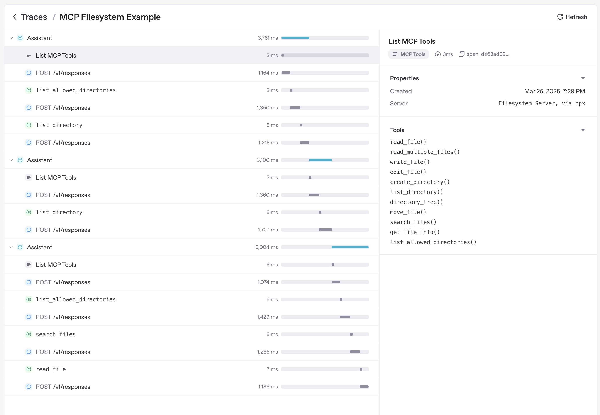

Model context protocol (MCP)
Model context protocol (MCP) は、アプリケーションが言語モデルに対してツールとコンテキストを公開する方法を標準化します。公式ドキュメントより:
MCP は、アプリケーションが LLM にコンテキストを提供する方法を標準化するオープンプロトコルです。MCP は AI アプリケーション向けの USB-C ポートのようなものだと考えてください。USB-C がデバイスをさまざまな周辺機器やアクセサリーに接続するための標準的な方法を提供するのと同様に、MCP は AI モデルを異なるデータソースやツールに接続するための標準的な方法を提供します。
Agents Python SDK は複数の MCP トランスポートを理解します。これにより、既存の MCP サーバーを再利用したり、エージェントに対してファイルシステム、HTTP、またはコネクターをバックエンドとするツールを公開するために独自の MCP サーバーを構築したりできます。
MCP 統合の選択
MCP サーバーをエージェントに接続する前に、ツール呼び出しをどこで実行するか、そして到達可能なトランスポートがどれかを決めてください。以下のマトリクスは、Python SDK がサポートする選択肢を要約したものです。
| What you need | Recommended option |
|---|---|
| OpenAI の Responses API により、モデルの代わりにパブリックに到達可能な MCP サーバーを呼び出したい | HostedMCPTool による Hosted MCP server tools |
| ローカルまたはリモートで稼働させている Streamable HTTP サーバーに接続したい | MCPServerStreamableHttp による Streamable HTTP MCP servers |
| Server-Sent Events を用いた HTTP を実装するサーバーと通信したい | MCPServerSse による HTTP with SSE MCP servers |
| ローカルプロセスを起動して stdin/stdout で通信したい | MCPServerStdio による stdio MCP servers |
以下のセクションでは、それぞれの選択肢、設定方法、そしてあるトランスポートを別のものより優先すべき場面について説明します。
エージェントレベルの MCP 設定
トランスポートの選択に加えて、Agent.mcp_config を設定することで MCP ツールの準備方法を調整できます。
from agents import Agent
agent = Agent(
name="Assistant",
mcp_servers=[server],
mcp_config={
# Try to convert MCP tool schemas to strict JSON schema.
"convert_schemas_to_strict": True,
# If None, MCP tool failures are raised as exceptions instead of
# returning model-visible error text.
"failure_error_function": None,
},
)
注記:
convert_schemas_to_strictはベストエフォートです。スキーマを変換できない場合は、元のスキーマが使用されます。failure_error_functionは、MCP ツール呼び出しの失敗をモデルにどのように提示するかを制御します。failure_error_functionが未設定の場合、SDK はデフォルトのツールエラー整形器を使用します。- サーバーレベルの
failure_error_functionは、そのサーバーに対してAgent.mcp_config["failure_error_function"]を上書きします。
1. Hosted MCP server tools
ホスト型ツールは、ツールの往復処理全体を OpenAI のインフラストラクチャに押し込みます。コード側でツールを列挙して呼び出す代わりに、HostedMCPTool がサーバーラベル (および任意のコネクターメタデータ) を Responses API に転送します。モデルはリモートサーバーのツールを列挙し、Python プロセスへの追加コールバックなしでそれらを実行します。ホスト型ツールは現在、Responses API のホスト型 MCP 統合をサポートする OpenAI モデルで動作します。
基本の hosted MCP ツール
エージェントの tools リストに HostedMCPTool を追加して、ホスト型ツールを作成します。tool_config の dict は、REST API に送る JSON を反映します。
import asyncio
from agents import Agent, HostedMCPTool, Runner
async def main() -> None:
agent = Agent(
name="Assistant",
tools=[
HostedMCPTool(
tool_config={
"type": "mcp",
"server_label": "gitmcp",
"server_url": "https://gitmcp.io/openai/codex",
"require_approval": "never",
}
)
],
)
result = await Runner.run(agent, "Which language is this repository written in?")
print(result.final_output)
asyncio.run(main())
ホスト型サーバーはそのツールを自動的に公開します。mcp_servers に追加する必要はありません。
hosted MCP 結果のストリーミング
ホスト型ツールは、関数ツールとまったく同じ方法で結果のストリーミングをサポートします。Runner.run_streamed に stream=True を渡して、モデルがまだ処理している間に増分の MCP 出力を消費します。
result = Runner.run_streamed(agent, "Summarise this repository's top languages")
async for event in result.stream_events():
if event.type == "run_item_stream_event":
print(f"Received: {event.item}")
print(result.final_output)
任意の承認フロー
サーバーが機微な操作を実行できる場合、各ツール実行の前に人間またはプログラムによる承認を必須にできます。tool_config の require_approval に、単一のポリシー ("always", "never") またはツール名からポリシーへのマッピング dict を設定します。Python 内で判断するには、on_approval_request コールバックを指定します。
from agents import MCPToolApprovalFunctionResult, MCPToolApprovalRequest
SAFE_TOOLS = {"read_project_metadata"}
def approve_tool(request: MCPToolApprovalRequest) -> MCPToolApprovalFunctionResult:
if request.data.name in SAFE_TOOLS:
return {"approve": True}
return {"approve": False, "reason": "Escalate to a human reviewer"}
agent = Agent(
name="Assistant",
tools=[
HostedMCPTool(
tool_config={
"type": "mcp",
"server_label": "gitmcp",
"server_url": "https://gitmcp.io/openai/codex",
"require_approval": "always",
},
on_approval_request=approve_tool,
)
],
)
このコールバックは同期・非同期のいずれでもよく、モデルが実行を継続するために承認データを必要とするたびに呼び出されます。
コネクターをバックエンドに持つ hosted サーバー
Hosted MCP は OpenAI コネクターもサポートします。server_url を指定する代わりに connector_id とアクセストークンを指定します。Responses API が認証を処理し、ホスト型サーバーがコネクターのツールを公開します。
import os
HostedMCPTool(
tool_config={
"type": "mcp",
"server_label": "google_calendar",
"connector_id": "connector_googlecalendar",
"authorization": os.environ["GOOGLE_CALENDAR_AUTHORIZATION"],
"require_approval": "never",
}
)
ストリーミング、承認、コネクターを含む、完全に動作するホスト型ツールのサンプルは
examples/hosted_mcp にあります。
2. Streamable HTTP MCP servers
ネットワーク接続を自分で管理したい場合は、MCPServerStreamableHttp を使用します。Streamable HTTP サーバーは、トランスポートを制御したい場合や、遅延を低く保ちながら独自インフラ内でサーバーを実行したい場合に最適です。
import asyncio
import os
from agents import Agent, Runner
from agents.mcp import MCPServerStreamableHttp
from agents.model_settings import ModelSettings
async def main() -> None:
token = os.environ["MCP_SERVER_TOKEN"]
async with MCPServerStreamableHttp(
name="Streamable HTTP Python Server",
params={
"url": "http://localhost:8000/mcp",
"headers": {"Authorization": f"Bearer {token}"},
"timeout": 10,
},
cache_tools_list=True,
max_retry_attempts=3,
) as server:
agent = Agent(
name="Assistant",
instructions="Use the MCP tools to answer the questions.",
mcp_servers=[server],
model_settings=ModelSettings(tool_choice="required"),
)
result = await Runner.run(agent, "Add 7 and 22.")
print(result.final_output)
asyncio.run(main())
コンストラクターは追加オプションを受け取ります:
client_session_timeout_secondsは HTTP の読み取りタイムアウトを制御します。use_structured_contentは、テキスト出力よりtool_result.structured_contentを優先するかどうかを切り替えます。max_retry_attemptsとretry_backoff_seconds_baseは、list_tools()とcall_tool()に自動リトライを追加します。tool_filterは、ツールのサブセットのみを公開できます ( ツールフィルタリング を参照)。require_approvalは、ローカル MCP ツールで人間参加型の承認ポリシーを有効化します。failure_error_functionは、モデルに見える MCP ツール失敗メッセージをカスタマイズします。代わりにエラーを送出するにはNoneに設定します。tool_meta_resolverは、call_tool()の前に呼び出しごとの MCP_metaペイロードを注入します。
ローカル MCP サーバー向けの承認ポリシー
MCPServerStdio、MCPServerSse、MCPServerStreamableHttp はすべて require_approval を受け取ります。
サポートされる形式:
- すべてのツールに対して
"always"または"never"。 True/False(always/never と同等)。- ツールごとのマップ。例:
{"delete_file": "always", "read_file": "never"}。 - グループ化オブジェクト:
{"always": {"tool_names": [...]}, "never": {"tool_names": [...]}}。
async with MCPServerStreamableHttp(
name="Filesystem MCP",
params={"url": "http://localhost:8000/mcp"},
require_approval={"always": {"tool_names": ["delete_file"]}},
) as server:
...
完全な一時停止/再開フローについては、Human-in-the-loop と examples/mcp/get_all_mcp_tools_example/main.py を参照してください。
tool_meta_resolver による呼び出しごとのメタデータ
MCP サーバーが _meta にリクエストメタデータ (たとえばテナント ID やトレースコンテキスト) を期待する場合は、tool_meta_resolver を使用します。以下の例では、Runner.run(...) に context として dict を渡す前提です。
from agents.mcp import MCPServerStreamableHttp, MCPToolMetaContext
def resolve_meta(context: MCPToolMetaContext) -> dict[str, str] | None:
run_context_data = context.run_context.context or {}
tenant_id = run_context_data.get("tenant_id")
if tenant_id is None:
return None
return {"tenant_id": str(tenant_id), "source": "agents-sdk"}
server = MCPServerStreamableHttp(
name="Metadata-aware MCP",
params={"url": "http://localhost:8000/mcp"},
tool_meta_resolver=resolve_meta,
)
実行コンテキストが Pydantic モデル、dataclass、またはカスタムクラスの場合は、代わりに属性アクセスでテナント ID を読み取ってください。
MCP ツール出力: テキストと画像
MCP ツールが画像コンテンツを返す場合、SDK はそれを自動的に画像ツール出力エントリーにマップします。テキスト/画像が混在するレスポンスは出力アイテムのリストとして転送されるため、エージェントは通常の関数ツールの画像出力と同じ方法で MCP 画像結果を消費できます。
3. HTTP with SSE MCP servers
Warning
MCP プロジェクトは Server-Sent Events トランスポートを非推奨にしました。新しい統合では Streamable HTTP または stdio を優先し、SSE はレガシーサーバーにのみ使用してください。
MCP サーバーが HTTP with SSE トランスポートを実装している場合は、MCPServerSse をインスタンス化します。トランスポート以外の点では、API は Streamable HTTP サーバーと同一です。
from agents import Agent, Runner
from agents.model_settings import ModelSettings
from agents.mcp import MCPServerSse
workspace_id = "demo-workspace"
async with MCPServerSse(
name="SSE Python Server",
params={
"url": "http://localhost:8000/sse",
"headers": {"X-Workspace": workspace_id},
},
cache_tools_list=True,
) as server:
agent = Agent(
name="Assistant",
mcp_servers=[server],
model_settings=ModelSettings(tool_choice="required"),
)
result = await Runner.run(agent, "What's the weather in Tokyo?")
print(result.final_output)
4. stdio MCP servers
ローカルのサブプロセスとして実行される MCP サーバーには、MCPServerStdio を使用します。SDK がプロセスを生成し、パイプを開いたまま維持し、コンテキストマネージャーの終了時に自動的にクローズします。この選択肢は、素早い概念実証や、サーバーがコマンドラインのエントリーポイントしか公開していない場合に役立ちます。
from pathlib import Path
from agents import Agent, Runner
from agents.mcp import MCPServerStdio
current_dir = Path(__file__).parent
samples_dir = current_dir / "sample_files"
async with MCPServerStdio(
name="Filesystem Server via npx",
params={
"command": "npx",
"args": ["-y", "@modelcontextprotocol/server-filesystem", str(samples_dir)],
},
) as server:
agent = Agent(
name="Assistant",
instructions="Use the files in the sample directory to answer questions.",
mcp_servers=[server],
)
result = await Runner.run(agent, "List the files available to you.")
print(result.final_output)
5. MCP サーバーマネージャー
複数の MCP サーバーがある場合は、MCPServerManager を使用して事前に接続し、接続されたサブセットをエージェントに公開します。
from agents import Agent, Runner
from agents.mcp import MCPServerManager, MCPServerStreamableHttp
servers = [
MCPServerStreamableHttp(name="calendar", params={"url": "http://localhost:8000/mcp"}),
MCPServerStreamableHttp(name="docs", params={"url": "http://localhost:8001/mcp"}),
]
async with MCPServerManager(servers) as manager:
agent = Agent(
name="Assistant",
instructions="Use MCP tools when they help.",
mcp_servers=manager.active_servers,
)
result = await Runner.run(agent, "Which MCP tools are available?")
print(result.final_output)
主な挙動:
drop_failed_servers=True(デフォルト) の場合、active_serversには接続に成功したサーバーのみが含まれます。- 失敗は
failed_serversとerrorsで追跡されます。 - 最初の接続失敗で例外を送出するには
strict=Trueを設定します。 - 失敗したサーバーの再試行には
reconnect(failed_only=True)を呼び出し、全サーバーの再起動にはreconnect(failed_only=False)を呼び出します。 connect_timeout_seconds、cleanup_timeout_seconds、connect_in_parallelを使用してライフサイクル挙動を調整します。
ツールフィルタリング
各 MCP サーバーはツールフィルターをサポートしており、エージェントに必要な関数だけを公開できます。フィルタリングは、構築時または実行ごとに動的に行えます。
静的ツールフィルタリング
単純な許可/ブロックリストを設定するには create_static_tool_filter を使用します。
from pathlib import Path
from agents.mcp import MCPServerStdio, create_static_tool_filter
samples_dir = Path("/path/to/files")
filesystem_server = MCPServerStdio(
params={
"command": "npx",
"args": ["-y", "@modelcontextprotocol/server-filesystem", str(samples_dir)],
},
tool_filter=create_static_tool_filter(allowed_tool_names=["read_file", "write_file"]),
)
allowed_tool_names と blocked_tool_names の両方が指定されている場合、SDK は最初に許可リストを適用し、その後、残った集合からブロックされたツールを取り除きます。
動的ツールフィルタリング
より複雑なロジックには、ToolFilterContext を受け取る callable を渡します。callable は同期・非同期のいずれでもよく、ツールを公開すべき場合に True を返します。
from pathlib import Path
from agents.mcp import MCPServerStdio, ToolFilterContext
samples_dir = Path("/path/to/files")
async def context_aware_filter(context: ToolFilterContext, tool) -> bool:
if context.agent.name == "Code Reviewer" and tool.name.startswith("danger_"):
return False
return True
async with MCPServerStdio(
params={
"command": "npx",
"args": ["-y", "@modelcontextprotocol/server-filesystem", str(samples_dir)],
},
tool_filter=context_aware_filter,
) as server:
...
フィルターコンテキストは、アクティブな run_context、ツールを要求している agent、および server_name を公開します。
プロンプト
MCP サーバーは、エージェントの指示を動的に生成するプロンプトも提供できます。プロンプトをサポートするサーバーは、次の 2 つのメソッドを公開します。
list_prompts()は利用可能なプロンプトテンプレートを列挙します。get_prompt(name, arguments)は、必要に応じてパラメーター付きで具体的なプロンプトを取得します。
from agents import Agent
prompt_result = await server.get_prompt(
"generate_code_review_instructions",
{"focus": "security vulnerabilities", "language": "python"},
)
instructions = prompt_result.messages[0].content.text
agent = Agent(
name="Code Reviewer",
instructions=instructions,
mcp_servers=[server],
)
キャッシュ
各エージェント実行は、各 MCP サーバーに対して list_tools() を呼び出します。リモートサーバーでは目立つ遅延が生じることがあるため、すべての MCP サーバークラスは cache_tools_list オプションを公開しています。ツール定義が頻繁に変わらないと確信できる場合にのみ True に設定してください。後で新しいリストを強制するには、サーバーインスタンスで invalidate_tools_cache() を呼び出します。
トレーシング
Tracing は、次を含む MCP アクティビティを自動的にキャプチャします。
- ツールを列挙するための MCP サーバー呼び出し。
- ツール呼び出しにおける MCP 関連情報。

追加資料
- Model Context Protocol – 仕様および設計ガイド。
- examples/mcp – 実行可能な stdio、SSE、Streamable HTTP のサンプル。
- examples/hosted_mcp – 承認とコネクターを含む、ホスト型 MCP の完全なデモ。